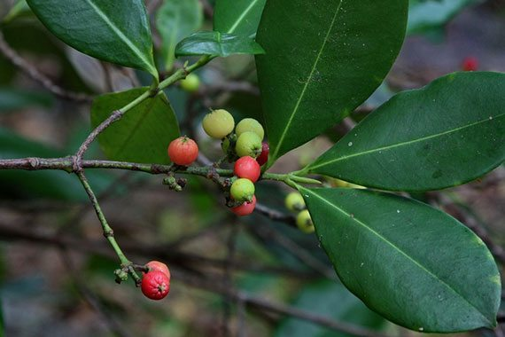

นายนันทศักดิ์ โชติชนะเดชาวงศ์ ผู้อำนวยการกองคุ้มครองภูมิปัญญาการแพทย์แผนไทยและพื้นบ้านไทย กรมพัฒนาการแพทย์แผนไทยและการแพทย์ทางเลือก กระทรวงสาธารณสุข (สธ.)
กล่าวว่า ขณะนี้มีสมุนไพรไทย 22 ชนิด ที่เสี่ยงอาจจะสูญพันธุ์ได้ ประกอบด้วย 1. ถั่วดินโคก 2. เทพทาโร 3. มะตูมนิ่ม 4. มะหาด 5. เร่ว 6. หัวร้อยรู 7. กระทุ่มนา 8. ขันทองพยาบาท 9. จุกโรหินี 10. ชะเอมไทย
11. ชิงชี่ 12. ตับเต่า 13. นางแย้มป่า 14. ปลาไหลเผือก 15. พังคี 16. มะคังแดง 17. สะค้าน 18. สารภีป่า 19. อบเชยไทย 20. เฉียงพร้านางแอ 21. เถาเอ็นอ่อน และ 22. เปราะหอม

1.ถั่วดินโคก
ลักษณะต้นไม้
ต้น : เป็นไม้พุ่มขนาดเล็ก สูงได้ 15-30 เซนติเมตร ลำต้นลักษณะสั้นประมาณ 5-8 เซนติเมตร
ใบ : ใบเป็นใบประกอบแบบขนนก ออกเรียงสลับ แนบไปกับพื้นดินเป็นแนวรัศมี ใบย่อยมี 9-13 ใบ ลักษณะของใบเป็นรูปวงรี รูปไข่ หรือรูปขอบขนานแกมรูปวงรี
ปลายใบเป็นรูปไข่กลับ ใบย่อยมีขนาดกว้างประมาณ 1.5-3 เซนติเมตร และยาวประมาณ 2-5 เซนติเมตร ผิวใบมีขนละเอียดสีขาวขึ้นปกคลุม
ดอก : ออกดอกเป็นช่อกระจะ โดยจะออกที่ปลายยอด ดอกย่อยมีจำนวนมาก กลีบดอกเป็นสีม่วงเข้ม มีลักษณะเป็นรูปดอกถั่ว ก้านช่อดอกยาว
ผล : ผลมีลักษณะเป็นฝักรูปขอบขนาน มีขนละเอียดสีขาว ภายในมีเมล็ด 1 เมล็ด
สรรพคุณ : ช่วยลดไข้ในเด็ก ใช้ต้มกับน้ำดื่มเป็นยาบำรุงน้ำนมของสตรี และใบนำมาฝนทาเป็นยาแก้ฝี

2.เทพทาโร
ลักษณะต้นไม้
ต้น : เป็นไม้ต้น สูง 10-30 เมตร เรือนยอดเป็นพุ่ม ทึบ กิ่งอ่อนเกลี้ยงและมักจะมีคราบขาว เปลือกสีเทาอมเขียวหรือสีน้ำตาลคล้ำ แตกเป็นร่องยาวตามลำต้น
ใบ : ใบเดี่ยว เรียงตรงข้าม แผ่นใบรูปรีแกมรูปไข่ ยาว 7-20 เซนติเมตร ปลายแหลม โคนสอบ ก้านใบเรียวเล็ก ยาวประมาณ 2.5-3.5 เซนติเมตร
ดอก : ดอกสีขาว เหลืองอ่อน ออกเป็นช่อประจุกตามปลายกิ่ง
ผล : ผลกลมเล็ก เส้นผ่าศูนย์กลางประมาณ 0.7 เซนติเมตร สีเขียว
สรรพคุณ : แก้ไข้หวัด แก้ไอ อาการไอเรื้อรัง ตัวร้อน ออกหัด เนื้อไม้ใช้ปรุงเป็นยาหอมลม รักษาท้องขึ้น อืดเฟ้อ จุกเสียด

3.มะตูมนิ่ม
ลักษณะต้นไม้
ต้น : เป็นไม้ยืนต้นขนาดเล็กถึงขนาดกลาง ผลัดใบ สูง 10-15 เมตร เรือนยอดรูปไข่ เปลือกต้นสีเทาเรียบหรือแตกเป็นร่องตื้นๆตามยาว เนื้อไม้แข็ง มีสีขาวแกมเหลือง
และมีกลิ่นหอม โคนต้นและกิ่งก้านมีหนามแหลม ยาว แข็ง ออกเดี่ยวหรือเป็นคู่ตามกิ่ง
ใบ : เป็นใบประกอบแบบมีใบย่อย 3 ใบ ออกเรียงสลับ ใบรูปไข่ กว้าง 1-7 เซนติเมตร ยาว 4-13 เซนติเมตร สองใบล่างมีขนาดเล็กและติดตรงข้ามกัน ใบปลายมีขนาดใหญ่ ปลายใบสอบ
โคนใบแหลม ขอบใบเรียบหรือมีหยักมนๆ แผ่นใบเรียบเกลี้ยงเป็นมัน ใบอ่อนสีเขียวอ่อนหรือสีชมพู มีขนละเอียด ใบแก่สีเขียวเข้ม เรียบเกลี้ยง เส้นใบข้าง 4-12 คู่ จรดกันที่ขอบใบ นูนขึ้นด้านบน
ก้านใบย่อยที่ปลายยาว 0.5-3 เซนติเมตร
ดอก : ออกเป็นช่อตามซอกใบและปลายกิ่ง ออกรวมกันเป็นช่อสั้นๆ ดอกสีขาวอมเขียวหรือสีเหลืองอ่อน ขนาด 1.5-2 เซนติเมตร ดอกมักออกพร้อมกับใบอ่อน มีกลิ่นหอม กลีบดอกมี 5 กลีบ
กลีบดอกขนาด 6-8 มม. รูปไข่กลับ โคนติดกัน ดอกสมบูรณ์เพศ เกสรตัวผู้มี 65-70 อัน อับเรณูสีน้ำตาลอ่อน ก้านเกสรตัวเมียสั้น รังไข่สีเขียวสด หมอนรองดอกเห็นไม่ชัดเจน
กลีบฐานดอกกางแผ่เป็นรูปดาวมี 4-5 แฉกแหลมๆ กลีบเลี้ยงแบนมี 4-5 พู ก้านดอกมีขนอ่อนปกคลุม
ผล : รูปรีกลมหรือรียาว ขนาดกว้าง 8-10 เซนติเมตร ยาวประมาณ 12-18 เซนติเมตร ผิวเรียบเกลี้ยง เปลือกหนา แข็งมาก ไม่แตก ผลอ่อนมีสีเขียวพอสุกมีสีเหลือง
เนื้อผลมีสีเหลือง นิ่ม มีกลิ่นหอม และมีเนื้อเยื่อสีส้มที่มียางเหนียวๆ ภายในมี 8-15 ช่อง
สรรพคุณ : คนโบราณจะนำมาทำเป็นยาอายุวัฒนะ เพื่อบำรุงกำลัง บำรุงเพศ ชลอความแก่ ทำให้ผมหงอกช้า โดยการนำมาสผมกับกล้วยน้ำไทและน้ำผึ้ง ปั้นเป็นลูกกอนรับประทาน เรียกตำรับยานี้ว่า “ลูกแปลกแม่”

4.มะหาด
ลักษณะต้นไม้
ต้น : เป็นไม้ยืนต้นขนาดใหญ่ไม่ผลัดใบ สูงประมาณ 15-20 เมตร ลักษณะเปลาตรง ทรงพุ่มกลมหรือแผ่กว้าง เปลือกลำต้นเป็นสีดำ ต้นแก่ผิวเปลือกจะค่อนข้างหยาบ ขรุขระและแตกเป็นสะเก็ดเล็กๆ
ใบ : เป็นใบเดี่ยว ออกเรียงสลับในระนาบเดียวกัน รูปรี รูปไข่ หรือรูปขอบขนาน ปลายใบมนหรือแหลมเป็นติ่งแหลม โคนใบมนหรือเว้ามนหรือแหลมกว้าง ขอบใบเรียบ ใบกว้าง 5-20 เซนติเมตร
และยาว 10-30 เซนติเมตร ผิวใบด้านบนมีขนหยาบเล็กน้อย ส่วนด้านล่างเป็นสีเขียวอมเทา มีขนหยาบสีเหลืองเล็กน้อย
ดอก : เป็นช่อกระจุกแน่นกลมสีเหลืองหม่นถึงสีชมพูอ่อน โดยจะออกตามซอกใบ ดอกเป็นแบบแยกเพศอยู่ในต้นเดียวกัน แต่อยู่คนละช่อ
ผล : เป็นสดและมีเนื้อ เป็นผลรวมสีเหลือง รูปทรงกลมค่อนข้างบิดเบี้ยวเป็นตะปุ่มตะป่ำ ผิวผลขรุขระและมีขนนุ่มคล้ายกำมะหยี่ ผลอ่อนเป็นสีเขียว พอสุกจะเปลี่ยนเป็นสีเหลืองอ่อนถึงส้ม
เมื่อแก่เป็นสีเหลืองปนน้ำตาล เนื้อผลนุ่มเป็นสีเหลืองถึงสีชมพู ภายในมีเมล็ดจำนวนมาก ลักษณะเป็นรูปขอบขนานหรือเกือบกลม เมล็ดเป็นสีน้ำตาลทา
สรรพคุณ : แก่นมีสรรพคุณเป็นยาแก้ลม เปลือกต้นสดนำมาต้มกับน้ำกินเป็นยาแก้ไข้

5.เร่ว
ลักษณะต้นไม้
ต้น : เป็นพืชล้มลุก มีเหง้าหรือลำต้นอยู่ในดิน มีลำต้นเทียมเป็นกาบแข่งโผล่เหนือดินขึ้นมา สูงได้ 2-4 เมตร โดยเป็นพืชสกุลเดียวกับ กระวาน ข่า ขิง
ใบ : ใบเป็นใบเดี่ยว ออกเรียงสลับ ผิวใบสีเขียวเข้มเป็นมัน ลักษณะของใบเรียวยาว เป็นรูปขอบขนานหรือรูปขอบขนานแกมใบหอกปลายใบเรียวแหลม ห้อยลง
มีความยาวประมาณ 30-50 เซนติเมตรและกว้างประมาณ 5-7 เซนติเมตร ก้านใบเป็นแผ่นมีขนาดสั้น
ดอก : ดอกมีสีขาว ออกเป็นช่อจากยอดที่แทงขึ้นมาจากเหง้า เป็นดอกฝอยขนาดเล็กดอกจะรวมอยู่ในก้านเดียวกันเป็นช่อยาว ๆ คล้ายกับดอกข่า
กลีบดอกเป็นสีขาวหรือชมพูอ่อนแล้วจะเปลี่ยนสีน้ำตาลเทา โคนกลีบดอกจะเชื่อมติดกันเป็นท่อ ปลายแยกเป็นกลีบมีก้านช่อดอกสั้น
ผล : ผลของเร่วนั้นสามารถจำแนกออกได้ดังนี้
เร่วน้อย: ผลค่อนข้างกลม ลักษณะเป็น 3 พู ขนาดเส้นผ่านศูนย์กลางประมาณ 1.0-1.5 เซนติเมตร ยาวประมาณ 1.5-2 เซนติเมตร มีขน ผลแก่สีน้ำตาลแดง มีเมล็ดจำนวนมากจับกันเป็นกลุ่มก้อนกลม
หรือกลมรี มี 3 พู แต่ละพูมีเมล็ด 3-15 เมล็ด อยู่เรียงแน่น 3-4 แถว เมล็ดรูปร่างไม่แน่นอน มีหลายเหลี่ยมและเป็นสันนูน กว้าง 2-3 มม. ยาว 2.5-4 มม. สีน้ำตาลเข้มหรือสีน้ำตาลดำ
ผิวนอกเรียบมีเยื่อบางหุ้ม ปลายแหลมของเมล็ดมีรูเห็นเด่นชัด เมล็ดแข็ง เนื้อในเมล็ดสีขาวอมเหลือง กลิ่นหอมฉุน รสเผ็ดซ่าและขมเล็กน้อย
เร่วใหญ่: ผลเรียวยาวหรือขอบขนานแกมสามเหลี่ยม ขนาดเส้นผ่านศูนย์กลางประมาณ 2 ซม. มีขนอ่อนสีน้ำตาลแดงปกคลุม ภายในมีเมล็ดเป็นกลุ่ม 10-20 เมล็ด
สรรพคุณ : ช่วยแก้อาการหืด,ไอ,คลื่นไส้อาเจียน รับประทานอาหารไม่ได้ ผลช่วยแก้เสมหะในลำคอ เมล็ดช่วยกัดเสมหะ

6.หัวร้อยรู
ลักษณะต้นไม้
ต้น : เป็นไม้พุ่ม อิงอาศัยบนคาคบของต้นไม้อื่น ลำต้นสูง 30-60 เซนติเมตร โคนต้นขยายใหญ่เป็นรูปกลมป้อมสีน้ำตาลเทา อวบน้ำ ขนาด ผ่านศูนย์กลาง 15-40 เซนติเมตร
ต้นแก่มีหัวกลมโตขนาดเท่าลูกมะพร้าวห้าว ภายในหัวเป็นรูย้อนขึ้น ย้อนลง พรุนไปทั่ว เมื่อผ่าออกดู มักมีมดดำอาศัยอยู่เต็มหัว ต้องนำมาแช่น้ำทิ้งไว้จนกว่ามดจะออกไปหมด
เนื้อนิ่ม สีน้ำตาลไหม้ มักขึ้นตามคาคบไม้
ใบ : ใบเดี่ยว เรียงตรงข้าม รูปรีแกมรูปขอบขนาน กว้าง 2-5 เซนติเมตร ยาว 4-10 เซนติเมตร แผ่นใบหนาอวบน้ำ ผิวใบเกลี้ยง ปลายใบมน
ดอก : สีขาว ออกเป็นกระจุก 2-5 ดอก ตามซอกใบ ดอกย่อย ขนาดเล็ก 2-4 เมตร โคนกลีบดอกเชื่อมติดกัน ปลายกลีบแยกเป็น 4 แฉก
ผล : เป็นผลสดฉ่ำน้ำ รูปรีถึงรูปไข่กลับ ผลแก่สีส้มถึงแดง
สรรพคุณ : ช่วยบำรุงหัวใจ หัว ใช้ตำกินเป็นยาขับพยาธิ

7.กระทุ่มนา
ลักษณะต้นไม้
ต้น : เป็นไม้ต้นขนาดกลาง ผลัดใบ สูง 8-15 เมตร เรือนยอดเป็นพุ่มกลม
ใบ : เรียงตรงข้าม รูปไข่หรือรูปรีที่ค่อนข้างกว้างเกือบกลม กว้าง 3-7 เซนติเมตร ยาว 5-12 เซนติเมตร ปลายมน โคนมนหรือเว้าเล็กน้อย ขอบเรียบ แผ่นใบด้านบนเกลี้ยง
ด้านล่างมีขนประปรายหรือเกลี้ยง ก้านใบยาว 0.6-1.3 เซนติเมตร หูใบระหว่างก้านใบ 1 คู่ รูปไข่กลับหรือรูปรีแกมรูปไข่กลับ ยาว 0.5-1.3 เซนติเมตร ปรากฎชัดตามปลายกิ่ง
ดอก : แบบช่อกระจุกแน่น จำนวนมาก ออกตามปลายกิ่ง มีใบประดับขนาดใหญ่ลักษณะคล้ายใบแซมห่างๆ บริเวณส่วนล่างของช่อ แต่ละช่อเมื่อดอกบานเต็มที่เส้นผ่านศูนย์กลางประมาณ 2 เซนติเมตร
แต่ละช่อมีดอกขนาดเล็ก ไม่มีก้านดอก กลิ่นหอม กลีบเลี้ยงเล็กมาก ติดกันคล้ายรูปถ้วย ขอบตัด กลีบดอกสีนวล ติดกันเป็นหลอดยาว ปลายแยกเป็น 5 แฉก เกสรเพศผู้ 5 อัน
รังไข่อยู่ใต้วงกลีบ มีก้านเกสรเพศเมียยื่นพ้นปากหลอดกลีบดอก
ผล : เป็นรูปไข่ มีขนาดเล็ก ผิวแข็งอัดรวมกันเป็นก้อนกลม ผลแห้งแตก เมล็ดมีปีก
สรรพคุณ : ช่วยลดความดันโลหิต ใบและเปลือกต้นต้มกินเป็นยาแก้ไข้ ใช้อมกลั้วคอแก้อาการอักเสบของเยื่อเมือกในปาก

8.ขันทองพยาบาท
ลักษณะต้นไม้
ต้น : เป็นไม้ยืนต้นขนาดกลาง สูง 7-13 เมตร ทรงพุ่มแน่นทึบ ลำต้นตรง กิ่งก้านอ่อน กิ่งห้อยลง กิ่งมีขนรูปดาว เปลือกต้นสีน้ำตาลแก่ ผิวบางเรียบ เนื้อไม้สีขาว
ใบ : เป็นใบเดี่ยว เรียงสลับ รูปขอบขนานแกมรูปหอก กว้าง 3-8 เซนติเมตร ยาว 9-22 เซนติเมตร เนื้อใบหนาทึบ เหนียว หลังใบเรียบลื่นเป็นมัน ท้องใบเรียบสีอ่อนกว่า ฐานใบรูปหัวใจ
ปลายใบเป็นติ่งยาว ขอบใบจักฟันเลื่อย ไม่มีขน มีต่อมใสๆ ขนาดเล็ก เส้นใบข้าง 5-9 คู่ ก้านใบยาว 2- 5 มิลลิเมตร ผิวใบด้านล่างมีต่อมสีเหลือง และมีขนรูปดาว หูใบขนาด 2 มม.
แต่ละคู่เชื่อมกัน หลุดร่วงง่าย แต่ทิ้งแผลเป็นวงไว้
ดอก : สีเขียวอมเหลืองอ่อน ออกเป็นช่อสั้นๆ ตรงซอกใบ ขนาด 0.8-1 ซม. กลิ่นหอม ช่อละ 5-10 ดอก อยู่ตรงกันข้ามกับใบ มีใบประดับยาว 1 มม. กว้าง 0.7-0.8 มม.
รูปหอก ตรงปลายแหลม ดอกแยกเพศ แยกต้น ไม่มีกลีบดอก ดอกเพศผู้ ขนาด 2.5 มิลลิเมตร เกสรเพศผู้ 35-60 อัน แต่ละอันมีต่อมที่ฐาน
อาจพบเกสรตัวผู้ที่เป็นหมันปะปนอยู่ด้วยฐานรองดอกนูนพองออก ดอกเพศเมีย ลักษณะเหมือนดอกเพศผู้ รังไข่เหนือวงกลีบ มีขนหนาแน่น รังไข่มี 3 ช่อง ก้านเกสรตัวเมีย 3 อัน
ปลายแยก รังไข่มีขนละเอียด มีหมอนรองดอก ก้านดอกยาว 5 มิลลิเมตร กลีบรองดอกมี 5 กลีบ หนา โคนเชื่อมกันเล็กน้อย ขอบจักเป็นซี่ฟัน
ผล : เกือบกลม ผิวเกลี้ยง ขนาด 2 เซนติเมตร ผลอ่อนสีเขียวเมื่อสุกมีสีเหลืองอมแสด แตกตามพู มี 3 พู มีติ่งเล็กๆที่ยอด เมล็ดค่อนข้างกลม
หนึ่งผลมี 3 เมล็ด ขนาด 7-8 มิลลิเมตร สีน้ำตาลเข้ม มีเนื้อบางๆสีขาว (aril) หุ้มเมล็ด
สรรพคุณ :ใช้เป็นยาบำรุงเหงือก รักษาเหงือกอักเสบ ทำให้ฟัน เหงือกแข็งแรง ขับระดูร้าย แก้โรคตับ และถอนพิษ

9.จุกโรหินี
ลักษณะต้นไม้
ต้น : เป็นไม้เถาเลื้อยเกาะพันต้นไม้อื่น มีรากตามลำต้นส่วนต่างๆ ของเถามีนํ้ายางสีขาวเหมือนน้ำนม
ใบ : ใบเดี่ยว เรียงตรงข้ามกัน แผ่นใบหนาอวบน้ำ รูปค่อนข้างกลม เส้นผ่านศูนย์กลาง 1 -2 ซม. ผิวใบเกลี้ยงทั้งสองด้าน เนื่องจากถูกมดเจาะ เข้าอาศัยทำให้มีลักษณะโป่งเป็นถุง
ยาว 5-10 ซม. กว้าง 3-5 ซม. ก้านใบสั้น
ดอก : ดอกเล็กรูปโคม สีเขียวแกมเหลือง ออกเป็นกระจุกหรือเป็น ช่อสั้นๆ ตามง่ามใบ
ผล : เป็นฝัก เรียวยาว 5-7.5 ซม. กว้าง 3-5 มม. เมล็ด เล็ก แบน มีขนเป็นพุ่มที่ปลาย
สรรพคุณ : ผลนำมาต้มกับน้ำดื่ม จะช่วยลดระดับน้ำตาลในเลือดได้ ช่วยแก้อาการอ่อนเพลีย ช่วยบำรุงกำลัง รากนำมาเคี้ยวกับพลูช่วยแก้อาการไอ

10.ชะเอมไทย
ลักษณะต้นไม้
ต้น : เป็นไม้เถายืนต้นขนาดกลาง สูง 5-8 เมตร มีหนามตามลำต้นและกิ่งก้าน เปลือกนอกสีน้ำตาลอมเทา
ใบ : เล็กละเอียดเป็นฝอย เป็นใบประกอบแบบขนนก 2 ชั้น ยาว 10-15 เซนติเมตร เรียงสลับ ใบย่อยเรียงตรงข้าม ใบย่อยรูปขอบขนาน มีขนที่ขอบใบ ผิวค่อนข้างเกลี้ยง
เส้นใบ 3-5 คู่ แต่ไม่ชัดเจน ไม่มีก้านใบย่อย ก้านใบหลักยาว 1.5-2.7 ซม. มีขนหนาแน่น เหนือโคนก้านใบเล็กน้อยมีต่อม
ดอก : ออกเป็นช่อที่ปลายกิ่ง ช่อดอกแบบช่อแยกแขนง ลักษณะเป็นพู่ กลีบดอกสีขาว มีกลิ่นหอม ก้านช่อดอกยาว 1.3-2.3 ซม. มีขนยาวกระจายทั่วไป ดอก 7-12 ดอก
ดอกรวมเป็นกระจุกที่ปลายก้าน กลีบเลี้ยง หลอดกลีบกว้างไม่เกิน 1 มม. ยาว 1 มม. ปลายแฉกยาว ¼ ของความยาวหลอดกลีบ สีเขียวอ่อน กลีบดอกมีขนาดเล็ก เชื่อมกันเป็นหลอด
หลอดกลีบกว้าง 1.0-1.5 มม. ยาว 2.5-3.0 มม. ปลายแฉกกว้าง 1 มม. ยาว 2.0-2.5 มม. สีขาวอมเหลือง เกสรตัวผู้ยาว สีขาว 10 อัน ก้านชูอับเรณูเชื่อมกันสูง 2.5-3.0 มม.
ปลายแยกกันยาว 1.3-1.6 ซม. สีขาว เกสรเพศเมีย รังไข่ยาว 2.0-2.5 มม. มี 9-10 ออวุล ก้านรังไข่ยาว 1 มม. ก้านและยอดเกสรเพศเมียยาว 10.5-18.0 มม. สีขาว
ผล : เป็นฝัก แบน ปลายแหลม กว้าง 2.3-2.5 ซม. ยาว 7.2-15.2 ซม. โคนและปลายแหลม มีเมล็ดนูนเห็นได้ชัด ประมาณ 3-10 เมล็ดต่อฝัก ก้านผลยาว 2.5 เซนติเมตร
มีขนหนาแน่น ผลอ่อนสีเขียว ผลแก่สีเหลืองถึงน้ำตาล เมล็ดกว้าง 4-6 มม. ยาว 5-8 มม. ตรงบริเวณที่มีเมล็ดจะมีรอยนูนเห็นชัด
สรรพคุณ : เปลือกต้นใช้ต้มกับน้ำดื่มช่วยแก้อาการไอ หากอาการไม่ดีขึ้นให้รับประทานติดต่อกัน 2-4 วัน ช่วยขับเสมหะ แก้น้ำลายเหนียว

11.ชิงชี่
ลักษณะต้นไม้
ต้น : เป็นไม้พุ่มหรือกึ่งเลื้อย สูง 2-6 เมตร กิ่งก้านอ่อนมีสีเขียว ผิวเรียบเกลี้ยง กิ่งคดไปมา มีหนามยาว 2-4 มิลลิเมตร ตรงหรือโค้งเล็กน้อย ลำต้นสีเทา ผิวเปลือกเป็นกระสีขาว แตกระแหง
ใบ : เป็นใบเดี่ยว เรียงสลับ รูปขอบขนาน รูปรี หรือรูปไข่ กว้าง 3-15 เซนติเมตร ยาว 9.5-24 เซนติเมตร ปลายใบมนหรือแหลม หรือเว้าเล็กน้อยแล้วเป็นติ่ง
โคนใบสอบมนหรือค่อนข้างเว้า ขอบใบเรียบเป็นคลื่นเล็กน้อย เนื้อใบค่อนข้างหนา มัน เกลี้ยง หลังใบเรียบเป็นมัน ท้องใบเรียบ ก้านใบยาว 0.7-1 เซนติเมตร
ดอก : ดอกเดี่ยว ออกเรียงเป็นแถว 1-7 ดอก ตามซอกใบบริเวณปลายกิ่ง ออกเรียงอยู่เหนือง่ามใบ ก้านดอกยาว 1-2 เซนติเมตร กลีบรองกลีบดอก ลักษณะเว้าเป็นรูปเรือแกมรูปไข่
กว้าง 2.5-5.5 มิลลิเมตร ยาว 5.5-13 มิลลิเมตร ขอบมักมีขน กลีบดอกรูปขอบขนาน หรือรูปหอก กว้าง 3-7 มิลลิเมตร ยาว 10-25 มิลลิเมตร สีขาว หลุดร่วงง่าย มี 2 กลีบด้านนอก
สีขาวแต้มเหลืองและจะเปลี่ยนเป็นแต้มสีม่วงปนน้ำตาล มีต่อมน้ำหวาน ที่โคนก้านดอก เกสรเพศผู้เป็นเส้นเล็กฝอยๆสีขาว เหมือนหนวดแมวยื่นออกมา มี 20-35 อัน ก้านยาว รังไข่รูปไข่ เกลี้ยง
ผล : ผลสด ค่อนข้างกลมหรือรี มี 4 ร่องตามยาว ผิวผลเรียบ แข็งเป็นมัน กว้าง 3-6.5 เซนติเมตร สีเขียวน้ำตาล เมื่อสุกสีเหลืองหรือแดง หรือดำ
เนื้อรสหวานรับประทานได้ เมล็ดรูปไต สีแดงหรือดำ เป็นมัน อัดกันแน่นเป็นจำนวนมาก
สรรพคุณ : ใบนำมาต้มดื่มเป็นยาแก้ไข้ รากใช้เป็นยาขับปัสสาวะ ช่วยทำให้มดลูกเข้าอู่

12.ตับเต่า
ลักษณะต้นไม้
ต้น : เป็นไม้ต้นขนาดกลาง สูง 10-15 เมตร เปลือกสีน้ำตาลปนเทา
ใบ : เป็นใบเดี่ยวเรียงสลับกัน แผ่นใบแผ่รูปขอบขนาน หรือมน กว้าง 7-23 ซม. ยาว 10-23 ซม. โคนใบกลมขอบใบเรียบ เนื้อใบเกลี้ยงและหนา ก้านใบยาวประมาณ 1 ซม.
ดอก : มีดอกเพศผู้และดอกเพศเมียอยู่ต่างต้นกัน ดอกเพศผู้อยู่รวมกันเป็นช่อเล็กๆ ตามกิ่งเหนือง่ามใบ ช่อหนึ่ง มักมี 3 ดอก โคนเชื่อมติดกันเป็นรูปถ้วย กลีบดอก 4 กลีบ ยาว 3-4 มม.
เกสรผู้มี 20-30 อัน ดอกเพศเมีย เป็นดอกเดี่ยวๆหรือเป็นช่อสั้น ช่อละ 3-5 ดอก ก้านดอกยาว 1 ซม. ลักษณะเหมือนดอกเพศผู้แต่ใหญ่กว่า รังไข่รูปป้อมมีขนเป็นเส้นไหม
ผล : รูปป้อมกลม เส้นผ่าศูนย์กลาง 1-2 ซม. ส่วนบนมีกลีบรองดอกติดอยู่ชัดเจน ผลแก่แห้งเป็นสีดำ
สรรพคุณ : เปลือกใช้เป็นยารักษาโรครำมะนาด น้ำต้มจากแก่นและรากมีสรรพคุณเป็นยาบำรุงปอด

13.นางแย้มป่า
ลักษณะต้นไม้
ต้น : เป็นไม้พุ่มขนาดย่อม มีความสูงของต้นประมาณ 0.5-4 เมตร ลำต้นตั้งตรง กิ่งอ่อนและต้นเปราะ เป็นสันสีเหลี่ยม ตามลำต้นและกิ่งอ่อนเป็นสีแดงหรือสีดำอมน้ำตาล
ใบ : ใบเป็นใบเดี่ยว ออกเรียงสลับตามข้อเป็นคู่ ตั้งฉากกัน ลักษณะของใบเป็นรูปรีหรือรูปหัวใจ ปลายใบสอบแหลม โคนใบสอบหรือเว้า ส่วนขอบใบหยักเป็นซี่ฟันตื้น ๆ
ใบมีขนาดกว้างประมาณ 3.5-20 เซนติเมตร และยาวประมาณ 6-25 เซนติเมตร แผ่นใบแข็งเป็นสีเขียวเข้ม มีขนสากระคายมือ มองเห็นเส้นใบได้ชัดเจน ก้านใบยาวประมาณ 2-5 เซนติเมตร
ดอก : ออกดอกเป็นช่อที่ปลายกิ่ง กลีบดอกเป็นสีขาว ดอกจะรวมกลุ่มกันเป็นช่อแน่น ช่อดอก
ผล : ลักษณะของผลเป็นรูปทรงกลม ผลอ่อนเป็นสีเขียว ผิวผลมัน เมื่อสุกแล้วจะเปลี่ยนเป็นสีน้ำเงินเข้มหรือดำ ผลมีกลีบเลี้ยงสีแดงหุ้มอยู่ ภายในผลมีเมล็ด 1 เมล็ด
สรรพคุณ : รากนางแย้มป่าใช้ต้มเป็นยาแก้ไข้ นอกจากนี้ยังช่วยรักษาลำไส้อักเสบ ในตำรายาไทยใช้รากเป็นยาช่วยขับปัสสาวะ

14.ปลาไหลเผือก
ลักษณะต้นไม้
ต้น : เป็นไม้พุ่มหรือไม้ต้นขนาดเล็ก ลำต้นตั้งตรง สูง 1-10 เมตร เปลือกสีน้ำตาล เป็นไม้ลงราก
ใบ : เป็นใบประกอบแบบขนนกปลายคี่ เรียงเวียน ใบประกอบยาวได้กว่า 35 เซนติเมตร ใบ ย่อย 8-13 คู่ เรียงตรงข้ามหรือเกือบตรงข้าม รูปใบหอกแกมรูปไข่กลับหรือรูปขอบขนานแกมรูปไข่ เรียวยาว
ใบย่อยเรียงแบบตรงข้าม กว้าง 1-3 เซนติเมตร ยาว 5-10 เซนติเมตร เส้นแขนงใบข้างละ 8-12 เส้น ปลายใบแหลม ฐานใบมน ขอบใบเรียบ โคนใบเบี้ยว เส้นใบเห็นไม่ชัดเจน ปลายโค้งจรดกัน
เส้นกลางใบนูนเล็กน้อยด้านบน นูนเด่นชัดด้านล่าง ไม่มีก้านใบย่อย แผ่นใบหนาคล้ายแผ่นหนัง ผิวใบเรียบเป็นมัน ผิวด้านบนเกลี้ยง ด้านล่างมีขนประปราย ก้านช่อใบยาว 7-15 เซนติเมตร
ดอก : เป็นช่อแบบแยกแขนง ออกเป็นกระจุกที่ปลายกิ่ง และซอกใบ เป็นช่อพวงใหญ่ ยาวได้ ถึง 30 เซนติเมตร ดอกแยกเพศร่วมต้น หรือแยกเพศต่างต้น มีขนละเอียดและขนสั้นเป็นต่อมกระจาย ทั้งก้านช่อดอก ก้านดอก ใบประดับ และกลีบเลี้ยง มีขนประปรายและมีขนต่อมเป็นกระจุก กลีบดอก 5 กลีบ สีม่วงปนแดง
ผล : ทรงกลม เป็นพวง มีประมาณ 5 ผลย่อย ทรงรีหรือรูปไข่ กว้าง 8-12 มิลลิเมตร ยาว 1-2 เซนติเมตร ผนังผลชั้นในแข็ง ก้านผลยาวประมาณ 3 มิลลิเมตร
เปลือกนอกบาง กลางผลมีร่องตื้นๆตามยาว ผลแก่สีแดงถึงม่วงดำ เมล็ดรูปรีมี 1 เมล็ด
สรรพคุณ : รากใช้เป็นยาบำรุงกำลัง บำรุงร่างกาย คนเดินป่านิยมกัน เพราะจะช่วยทำให้ร่างกายแข็งแรง ช่วยคลายอาการปวดเมื่อย รากใช้เป็นยาขับพยาธิ

15.พังคิ
ลักษณะต้นไม้
ต้น : เป็นไม้พุ่ม มีความสูงประมาณ 2 เมตร กิ่งก้านมีขนเป็นรูปดาวสีขาว เปลือกลำต้นเป็นสีน้ำตาลขรุขระ ทุกส่วนมีขน ส่วนรากมีลักษณะเรียวยาว เปลือกหุ้มรากเป็นเยื่อบางสีเหลืองเข้ม
ใบ : เป็นใบเดี่ยวออกเรียงสลับกัน ลักษณะของใบเป็นรูปไข่ หรือรูปวงรี มีความกว้างประมาณ 3-8 เซนติเมตร และยาวประมาณ 6-15 เซนติเมตร ปลายใบแหลม โคนใบสอบมน
หรือเป็นรูปทรงกลมแคบ ส่วนขอบใบหยักและไม่สม่ำเสมอ แผ่นใบเป็นสีเขียวเข้ม ใบหนา ด้านบนของใบเกลี้ยง ส่วนแผ่นใบด้านล่างมีขนสีขาวจำนวนมาก ทำให้มองเห็นแผ่นใบเป็นสีขาวหรือสีเงิน
มีเส้นใบข้างละประมาณ 4-5 คู่ ส่วนหูใบเป็นรูปใบหอก
ดอก : เป็นแบบแยกเพศอยู่บนต้นเดียวกัน ในแต่ละช่อดอกจะมีดอกตัวผู้ 1-2 ดอก และดอกตัวเมีย 1 ดอก โดยดอกตัวผู้จะมีกลีบเลี้ยง 4 กลีบ ขนาดประมาณ 1.5-2 มิลลิเมตร มีขนขึ้นนุ่มเป็นรูปดาว มีเกสตัวผู้สีเหลือง
ผล : ลักษณะของผลเป็นรูปทรงกลม ผลแห้งไม่แตก มีขนาดเส้นผ่านศูนย์กลางประมาณ 8 มิลลิเมตร ผลแบ่งออกเป็น 3 พู ผิวของผลทั้งผลเป็นลายเส้นสีขาว และมีขนนุ่มสีขาว ในผลมีเมล็ดขนาดเส้นผ่านศูนย์กลางประมาณ 5 มิลลิเมตร
สรรพคุณ : รากพังคีช่วยแก้อาการจุกเสียด แก้ท้องอืด ท้องเฟ้อ ปวดท้อง รากใช้ตำประคบแก้อาการปวด

16.มะคังแดง
ลักษณะต้นไม้
ต้น : เป็นไม้พุ่มกึ่งไม้ยืนต้นขนาดเล็ก มีความของต้นได้ประมาณ 6-12 เมตร ใบดกหนาทึบ เปลือกลำต้นและกิ่งก้านเป็นสีน้ำตาลแดงเข้ม มีขนนุ่มคล้ายกำมะหยี่สีน้ำตาลแดงขึ้นปกคลุมทั่วไป
ตามโคนต้น ลำต้น และกิ่งมีหนามขนาดใหญ่โดยรอบ พุ่งตรงออกเป็นระยะ ตามกิ่งก้านอ่อนมีสีน้ำตาลอมแดง
ใบ : ใบเป็นใบเดี่ยว ออกเรียงตรงข้ามกัน ใบมีลักษณะรีกว้าง รูปวงรี หรือรูปไข่กลับ ปลายใบมน โคนใบมน ส่วนขอบใบเรียบ ใบมีขนาดกว้างประมาณ 8-15 เซนติเมตร
และยาวประมาณ 15-22 เซนติเมตร หลังใบด้านบนเรียบ ส่วนท้องใบด้านล่างมีขนสีขาวขึ้นปกคลุม หรือมีขนทั้งสองด้าน ก้านใบมีขนสีขาว มีหูใบรูปสามเหลี่ยมหลุดร่วงได้ง่าย
ดอก : ออกดอกเป็นช่อสั้น ๆ ขนาดเล็ก โดยจะออกตามซอกใบใกล้ปลายกิ่ง ดอกย่อยเป็นสีเขียวอ่อน กลีบดอกมี 5 กลีบ โคนกลีบดอกเชื่อมติดกัน กลีบดอกเป็นรูปกลม ดอกมีเกสรเพศผู้เป็นเส้นติดกับกลีบดอกวางสับหว่างกลีบดอก
ผล : ผลสด ผลเป็นรูปทรงกลม สีเขียว มีสันนูนประมาณ 5-6 สัน ผิวผลเรียบ ปลายผลมีกลีบเลี้ยงติดอยู่ ออกดอกและติดผลในช่วงประมาณเดือนเมษายนถึงเดือนกรกฎาคม
สรรพคุณ : เนื้อไม้มีรสเย็นเฝื่อน ใช้ต้มกับน้ำดื่มเป็นยาแก้เลือดลมเดินไม่สะดวก แก้พิษโลหิตและน้ำเหลืองเปลือกต้นใช้ตำพอกแผลสดเพื่อห้ามเลือด

17.สะค้าน
ลักษณะต้นไม้
ต้น : เป็นไม้เถา ขนาดกลาง มีข้อปล้อง เนื้อไม้เป็นเส้นยาว หน้าตัดตามขวางมีลาย เป็นเส้นรัศมี เปลือกค่อนข้างอ่อน เนื้อไม้สีขาว
ใบ : ใบเดี่ยวรูปใบหอกกว้างคล้ายใบพริกไทย แต่แคบกว่า ปลายใบแหลม ใบสีเขียวเข้ม เนื้อใบเหนียวและหนามาก ใบบนลำต้นมีขนาดเล็กกว่ามาก
ส่วนใหญ่แผ่นใบรูปสามเหลี่ยมแคบโดยเรียวไปทางปลายใบ หรือรูปไข่แคบ ฐานใบเว้าลึกพูมน สมมาตรหรือไม่สมมาตร ปลายใบแหลม ใบบนกิ่งแผ่นใบรูปรี ฐานใบเว้ารูปหัวใจ ปลายใบแหลม
หรือเรียวแหลม แผ่นใบทั้งสองแบบขนาด 5-11.5 x 8-22 ซม. เส้นใบมีจำนวน 9 เส้น มี 3 คู่ออกจากฐานใบ เส้นอื่นๆ ออกจากเส้นกลางใบเหนือฐานใบ 2-3 ซม.
ดอก : ออกดอกเป็นช่อยาวเล็ก สีครีม ดอกย่อยอัดกันแน่น คล้ายดอกพริกไทยหรือดอกดีปลี ช่อดอกเพศผู้ห้อยลง ขนาด 0.1-0.2 x 5-8 ซม. ก้านช่อดอกยาว 0.5-0.8 ซม. ใบประดับมีก้าน เกสรเพศผู้ 4 อัน
ผล : ผลอ่อนสีเขียว ผลสุกสีแดงคล้ำ
สรรพคุณ : เครือ ใช้ประกอบอาหารช่วยเพิ่มรสเผ็ด ลำต้นใช้ใส่แกง ช่วยให้มีกลิ่นหอม

18.สารภิป่า
ลักษณะต้นไม้
ต้น : เป็นไม้ยืนต้น ขนาดเล็กถึงขนาดกลาง ไม่ผลัดใบ สูง 10-15 เมตร เรือนยอดเป็นพุ่มทึบแผ่กว้าง เปลือกต้นสีเทาหรือเทาปนน้ำตาล แตกล่อนเป็นสะเก็ด เปลือกชั้นในสีแดงเข้ม
มีน้ำยางสีคล้ายน้ำนม เมื่อทิ้งให้สัมผัสกับอากาศจะเปลี่ยนเป็นสีเหลืองอ่อน กิ่งอ่อนเป็นสันสี่เหลี่ยม
ใบ : ใบเดี่ยวเรียงตรงข้ามสลับตั้งฉาก รูปรี รูปขอบขนาน หรือรูปไข่กลับแกมรูปขอบขนาน กว้าง 4-6.5 เซนติเมตร ยาว 15-20 เซนติเมตร ปลายมนหรือแหลม โคนสอบแคบหรือสอบเรียว
ปลายใบมนหรือสอบทู่ๆ อาจมีติ่งสั้นๆ หรือหยักเว้าตื้นๆ ขอบเรียบ แผ่นใบหนาคล้ายแผ่นหนัง เกลี้ยงทั้งสองด้าน สีเขียวเข้มเป็นมัน เส้นแขนงใบจำนวนมาก ไม่ชัดเจน ก้านใบ ยาว 0.5-1 เซนติเมตร เกลี้ยง
ดอก : ดอกออกเป็นช่อ ช่อเดียวหรือหลายช่อตามกิ่ง สีขาว กลิ่นหอมมาก เมื่อใกล้โรยดอกเปลี่ยนเป็นสีเหลือง ก้านดอกยาว 0.5-2.5 เซนติเมตร กลีบเลี้ยง 2 กลีบ เกือบกลม โค้งเป็นแอ่ง โคนเชื่อมติดกัน ติดทน
และขยายโตตามผล กลีบดอก 4 กลีบ รูปไข่กลับ กว้าง 4-6 มิลลิเมตร ยาว 7-8 มิลลิเมตร มีเส้นตามยาว เมื่อบานมีเส้นผ่าศูนย์กลางราว 1.5 เซนติเมตร เกสรเพศผู้ จำนวนมาก ก้านชูอับเรณูเรียวยาว
อับเรณูรูปขอบขนาน สีเหลืองเข้ม รังไข่อยู่เหนือวงกลีบ มี 2 ช่อง แต่ละช่องมีออวุล 2 เม็ด ยอดเกสรเพศเมีย เป็น 3 แฉก
ผล : แบบผลผนังชั้นในแข็ง รูปรีหรือรูปกระสวย กว้าง 0.8-2.5 เซนติเมตร ยาว 2-2.5 เซนติเมตร เมื่อสุกสีเหลืองอมส้ม มีเนื้อสีเหลืองหรือสีแสดหุ้มเมล็ด ก้านผลยาว 1.4-1.6 เซนติเมตร
ผลแก่แตกออกได้ เมล็ด 1 เมล็ด ขนาดใหญ่ แข็ง
สรรพคุณ : ดอกมีสรรพคุณเป็นยาบำรุงหัวใจ ตำรายาไทยจะใช้เปลือกและดอกเป็นยาแก้ไข้ ดอกมีสารช่วยขยายหลอดลม และช่วยขับลม เปลือกและดอกมีสรรพคุณเป็นยาแก้บิด

19.อบเชยไทย
ลักษณะต้นไม้
ต้น : เป็นต้นไม้ขนาดกลางสูงราว 20-25 เมตร ไม่ผลัดใบ เปลือกลำต้นมีสีเทาและหนา กิ่งขนานกับพื้นและตั้งชันขึ้น เปลือกต้นและใบมีกลิ่นหอม
ใบ : เป็นใบเดี่ยว ออกลับกันตามลำต้น ลักษณะใบคล้ายรูปไข่ กว้าง 4-6 เซนติเมตร ยาว 10-16 เซนติเมตร ปลายใบแหลม โคนใบแหลม มีเส้นใบสามเส้น ขอบใบเรียบ ก้านใบยาวราว 2 เซนติเมตร
ดอก : ออกเป็นช่อ ขนาดเล็ก สีเหลือง มีกลิ่นหอม ที่ปลายกิ่งและตามซอกใบ ยาว 10-12 เซนติเมตร ก้านช่อดอกมีขน เป็นมัน ก้านดอกย่อยยาวราว 3-4 มิลลิเมตร มีขน ดอกตูมรูปไข่กลับ
ยาวราว 2-3 มิลลิเมตร ดอกย่อยมีกลีบรวม 6 กลีบ ด้านนอกมีขนหนาแน่น ด้านในมีขนแน่นเป็นมัน เกสรเพศผู้มี 9 อัน เรียงเป็น 3 วง วงในสุดมีตุ่มที่โคนก้าน เกสรเพศผู้ที่เป็นหมัน มี 3 อัน
รูปผลรียาว 8-14 มิลลิเมตร มีกลีบรวมติดอยู่กับรวงยาวราว 4-8 มิลลิเมตร มีสันนูน 12 สัน ระหว่างสันเป็นร่อง
ผล : ผลแบบมีเนื้อ รูปคล้ายรูปไข่ถึงทรงรี ยาว 1 – 2 เซนติเมตร สุกมีสีดา เมล็ดมี 1 เมล็ด
สรรพคุณ :เป็นยาร้อนออกฤทธิ์ต่อไต ม้าม และกระเพาะปัสสาวะ ใช้เป็นยาบำรุงร่างกาย ทำให้ร่างกายอบอุ่น ช่วยกระจายความเย็นในร่างกาย ทำให้เลือดหมุนเวียนดี

20.เฉียงพร้านางแอ
ลักษณะต้นไม้
ต้น : เป็นไม้ยืนต้นขนาดกลางถึงขนาดใหญ่ สูง 25-30 เมตร ไม่ผลัดใบ ลำต้นตั้งตรง เรือนยอดทรงพุ่มรูปกรวยกว้างทึบ เปลือกสีน้ำตาลอมแดงถึงน้ำตาลอมเทา ผิวเรียบ มีรูอากาศมาก
หรืออาจพบเปลือกต้นหนาแตกเป็นร่องลึกตามยาว อาจพบลักษณะคล้ายรากค้ำจุนแบบ prop root เป็นเส้นยาว หรือออกเป็นกระจุกตามลำต้น หรือส่วนโคนต้น
ใบ : เป็นใบเดี่ยว เรียงตรงข้ามสลับตั้งฉาก รูปวงรีแกมรูปขอบขนาน กว้าง 4-7 เซนติเมตร ยาว 7-10 เซนติเมตร หลังใบสีเขียวเข้ม เป็นมันหนา ท้องใบสีอ่อนกว่า และมีจุดสีดำกระจาย
ปลายใบมนมีติ่งเล็ก ฐานใบสอบแหลม ขอบใบเรียบเป็นคลื่น มีหูใบหุ้มยอดอ่อน เมื่อร่วงจะเห็นรอยแผล บริเวณข้อพองเล็กน้อย แผ่นใบเกลี้ยง หนาและเหนียว ก้านใบยาว 0.4-1 เซนติเมตร
ดอก : ช่อแยกแขนง ออกที่ซอกใบหรือปลายกิ่ง แตกแขนงเป็น 4 กิ่ง ดอกย่อยจำนวนมากขนาดเล็ก มักเรียงตัวแน่นเป็นช่อกลม ไม่มีก้านดอกย่อย กลีบดอก 5 กลีบ กลีบดอกขนาดเล็ก
รูปร่างเป็นแผ่นกลม สีเขียวอมเหลือง เกสรเพศผู้มี 10-16 อัน กลีบเลี้ยง 5 กลีบ เชื่อมติดกันเป็นรูประฆัง รูปร่างเกือบเป็นแผ่นตรง
ผล : ผลสดแบบมีเนื้อ รูปทรงกลม ขนาดเล็ก ออกเป็นกระจุก เส้นผ่าศูนย์กลาง 0.5-1 เซนติเมตร มีกลีบเลี้ยงด้านบน คล้ายมงกุฎ ผิวผลเป็นมัน มีเนื้อบางสีเขียวห่อหุ้ม ผลแก่สีส้มปนแดง
สรรพคุณ : ลำต้นใช้ต้มน้ำดื่มช่วยบำรุงร่างกาย ทำให้เจริญอาหารหรือใช้เป็นยาเจริญอาหารสำหรับสตรีหลังคลอดบุตร

21.เถาเอ็นอ่อน
ลักษณะต้นไม้
ต้น : เป็นไม้เถาเลื้อยพาดพันกับต้นไม้อื่น เป็นไม้เลื้อยจำพวกเถาเนื้อแข็ง เถาลำต้นกลม เปลือกเถาเรียบหนาเป็นสีน้ำตาลอมสีดำหรือเป็นสีแดงเข้มและมีลายประตลอดเถา ยาวประมาณ 4-5 เมตร
ก้านเล็ก มีสีเทาอมเขียวและไม่มีขนปกคลุม เมื่อเถาแก่เปลือกจะหลุดลอกออกเป็นแผ่น ๆ มียางสีขาวข้นทั้งต้น
ใบ : ใบเป็นใบเดี่ยว ออกเรียงตรงข้ามกัน ลักษณะของใบเป็นรูปรีหรือรูปไข่ ปลายใบมนมีหางสั้น โคนใบสอบ ส่วนขอบใบเรียบ ใบมีขนาดกว้างประมาณ 3-8 เซนติเมตรและยาวประมาณ 5-18 เซนติเมตร
แผ่นใบค่อนข้างหนา หลังใบเรียบเป็นมันและลื่น ท้องใบเรียบเป็นสีเขียวนวล ใบอ่อนมีขนปกคลุม ส่วนใบแก่ไม่มีขน เส้นใบตามขวางจะเป็นเส้นตรงไม่โค้ง ใบหนึ่งจะมีประมาณ 30 คู่ ส่วนก้านใบสั้น ยาวได้ประมาณ 0.5-1 เซนติเมตร
ดอก : ออกดอกเป็นช่อตามซอกใบ ดอกย่อยเป็นสีเหลืองอ่อนหรือสีเป็นสีขาวอมเหลือง ดอกมีกลีบดอก 5 กลีบ โคนกลีบดอกเชื่อมติดกัน ส่วนกลีบเลี้ยงดอกเป็นสีเขียวมี 5 กลีบ
ผล : ออกผลเป็นฝัก ลักษณะของฝักเป็นรูปทรงกระสวย กลมยาว ยาวประมาณ 6.5-10 เซนติเมตร และมีขนาดเส้นผ่านศูนย์กลางฝักประมาณ 1-2 เซนติเมตร ฝักมีเนื้อแข็ง
โคนผลติดกัน ปลายผลแหลม ผิวผลเป็นมันลื่น พอแก่แล้วจะแตกอ้าออก ภายในผลมีเมล็ดสีน้ำตาลมีขนปุยสีขาวติดอยู่และปลิวไปตามลมได้ ลักษณะของเมล็ดเป็นรูปรีหรือรูปกลมยาวแบน
มีความยาวประมาณ 1 เซนติเมตร
สรรพคุณ : เป็นยาเย็น มีพิษ ออกฤทธิ์ต่อหัวใจและตับ ใช้เป็นยาฟอกเลือด ขับลมในลำไส้และในกระเพาะอาหาร ทำให้ผายลมและเรอ ช่วยแก้อาการจุกเสียดแน่นท้อง

22.เปราะหอม
ลักษณะต้นไม้
ต้น : เป็นพืชล้มลุก มีอายุราวหนึ่งปี ทั้งเปราะหอมขาวและเปราะหอมแดง เป็นไม้ลงหัวจำพวกมหากาฬ มีลำต้นเป็นหัวอยู่ใต้ดิน หรือที่เรียกว่า “เหง้า” เนื้อภายในของเหง้ามีสีเหลืองอ่อน
และมีสีเหลืองเข้มตามขอบนอก และมีกลิ่นหอมเฉพาะตัวเหลืองเข้มตามขอบนอก มีกลิ่มหอมเฉพาะตัว
ใบ : เป็นใบเดี่ยว แทงขึ้นจากเหง้าใต้ดิน 2-3 ใบ แผ่ราบไปตามพื้นดิน หรือวางตัวอยู่ในแนวราบเหนือพื้นดินเล็กน้อย ใบมีรูปร่างค่อนข้างกลมหรือรูปไข่ป้อม ปลายใบแหลม
โคนใบมนหรือเว้าเล็กน้อย มีขนอ่อนบริเวณท้องใบ บางครั้งอาจพบขอบใบมีสีแดงคล้ำ เนื้อใบค่อนข้างหนา ตัวใบมีขนาดกว้าง 5-10 ซม. ยาว 7-15 ซม. ก้านใบเป็นกาบยาว 1-3 ซม.
ดอก : ออกดอกรวมเป็นช่อ มีความยาวประมาณ 2-4 เซนติเมตร มีดอกประมาณ 4-12 ดอก โดยออกดอกตรงกลางระหว่างใบ ดอกมีสีขาวหรือสีขาวอมชมพูแต้มด้วยสีม่วง ในแต่ละดอกจะมีกลีบประดับ 2 กลีบรองรับอยู่
ผล : เป็นผลแห้ง แตกได้ พบมากทางเหนือ
สรรพคุณ :ใช้เป็นยาแก้ปวดศีรษะ คลายเครียด ใช้เป็นยาบำรุงหัวใจ บำรุงประสาท ด้วยการใช้หัวผสมลงในยาหอม หัวเปราะหอมนำมาต้มหรือชงกิน จะช่วยในการนอนหลับได้เป็นอย่างดี และยังช่วยลดความเครียดได้อีกด้วย